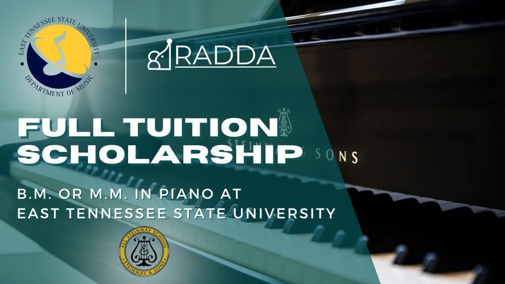

全额音乐学士/音乐硕士学费奖学金
RADDA RISE与EAST TENNESSEE STATE UNIVERSITY合作

Radda Rise国际钢琴比赛，与East Tennessee State University（ETSU）合作为有抱负的钢琴家提供了一个非凡的机会：无论是音乐学士（BM）还是音乐硕士（MM）学位，均提供全额学费奖学金。这项声望卓著的奖学金面向所有符合ETSU入学要求并参加Radda Rise国际钢琴比赛的国内外学生开放。被选中的获奖者将有幸在Éva Polgár博士的指导下学习。奖学金覆盖整个学位课程的全部州内学费，并可能提供额外资金以支付住房和生活费用。申请人必须经历一个全面的申请和选拔过程，包括提交比赛视频、进行第二轮试镜以及与波尔加博士的面试。这个机会不仅是财务激励，更是通往专业成长和音乐事业蓬勃发展的大门。
奖学金详情
-
资格条件：
- 面向音乐学士（BM）或音乐硕士（MM）学位的候选人开放。
- 要求参加拉达瑞斯国际钢琴比赛。
- 国内外学生均有资格。
- 申请人必须满足东田纳西州立大学的入学要求。
- 被选中的奖学金接受者将在伊娃·波尔加博士的工作室学习。
-
奖学金覆盖范围：
- 全额学费覆盖整个学位课程，指的是州内学费标准。
- 额外奖学金机会： 根据评委的判断，可能会颁发额外的奖学金以支付住房和生活费用。
-
申请与选拔流程：
- 提交拉达瑞斯国际钢琴比赛的申请，并在表格上表示对奖学金的兴趣。
- 比赛视频将作为ETSU的试镜材料；无需额外材料。
- 被选中的候选人将与伊娃·波尔加博士进行第二轮试镜，包括面试和2-3次试教课程，可通过虚拟或面对面方式进行。
- 最终决定将基于比赛表现、试教课程和与波尔加博士的面试。
-
重要日期：
- 2024年3月初接到第二轮试镜的录取通知
- 第二轮试镜录取后两个月内完成试教课程。
- 试教课程和面试期结束后2周内，将发送录取或拒绝通知 - 2024年5月中旬。
- 录取后一个月内需要对项目做出承诺，包括撤回对其他大学的申请 - 2024年6月中旬。
- 提交东田纳西州立大学的申请：申请截止日期为2024年7月31日。
-
额外要求：
- 奖学金获得者同意在接受奖学金提议后，不申请其他大学或撤回正在进行的申请。
-
联系信息：
- 比赛咨询：主任Michelle Schodowski，michelle@raddaconnect.com或3579640076@qq.com
- 大学申请问题：伊娃·波尔加博士，polgar@etsu.edu
奖学金常见问题解答
可以，但需在整个学位课程期间保持满意的学术进度。
此奖学金仅适用于新入学的学生。
有。
有。
奖学金覆盖整个学位课程的全部州内学费。根据评委的裁量，还可能有额外资金用于住房和生活费用。
不需要，参加比赛同时也是ETSU的面试。试教课程和面试可以亲自进行，也可以在线上进行。
包括与伊娃进行的面试和2-3次试教课程，可以线上或面对面进行。
候选人需在收到录取通知后的6月中旬前做出决定。
是的，接受奖学金意味着承诺入读东田纳西州立大学并撤回其他大学的申请。
不需要，所有在申请中表达兴趣的符合条件的申请人都将被考虑授予奖学金，无论他们是否获得奖项。
奖学金专门用于东田纳西州立大学，不可转让。
推迟奖学金的政策取决于大学的决定。
国际学生应考虑健康保险、免疫要求和英语语言测试，以及住宿和餐饮费用。
校内住宿安排基于先到先得的原则。
鼓励提早申请校内住宿。
可以，我们的奖学金获得者有资格申请更多奖学金，包括校长奖学金和教务长奖学金。
不需要，考试成绩和其他文件的截止日期为2025年9月2日星期二，但建议尽早提交。
每个学期的入学申请截止日期为第一周课程周五下午4:30东部时间。所有必需文件（官方成绩单等）需在下一个工作日东部时间下午4:30前提交。
关于比赛的任何问题，请联系比赛主任Michelle Scodowski，邮箱为michelle@raddaconnect或对于中国地区的电子邮件，请使用 3579640076@qq.com。
关于奖学金或ETSU的问题，请联系伊娃·波尔加博士，邮箱为polgar@etsu.edu。
ETSU的钢琴音乐硕士学位项目将于2024年秋季开设首年课程。有关该项目的更多详情，请联系伊娃·波尔加博士，邮箱为polgar@etsu.edu。